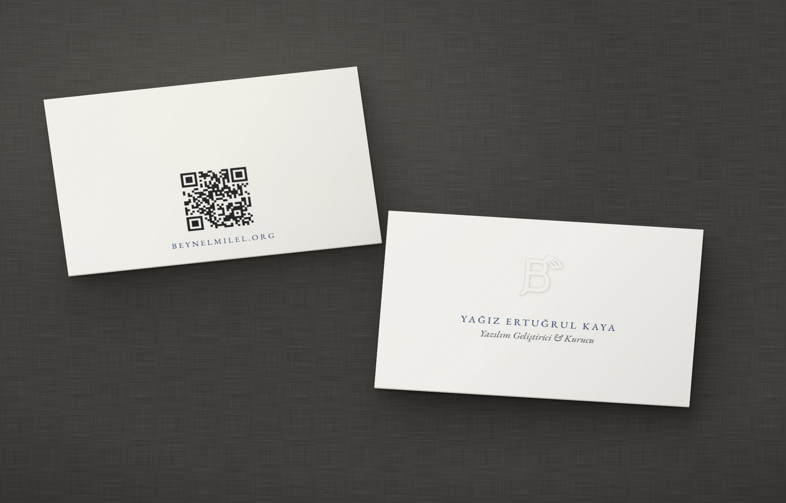
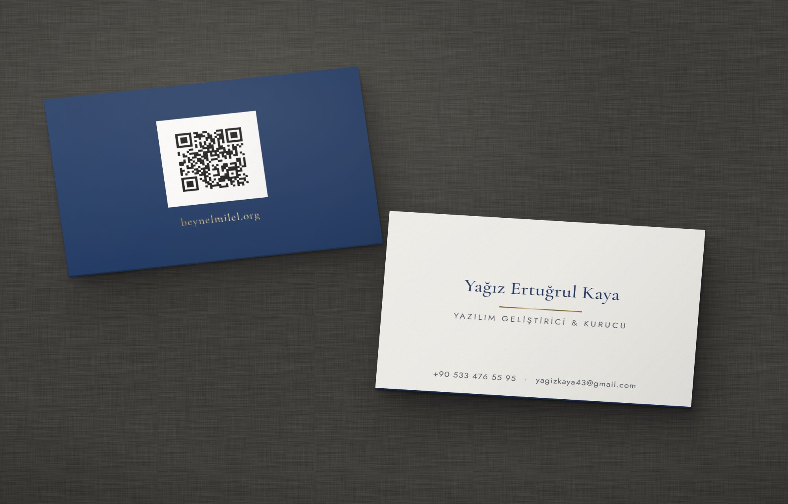
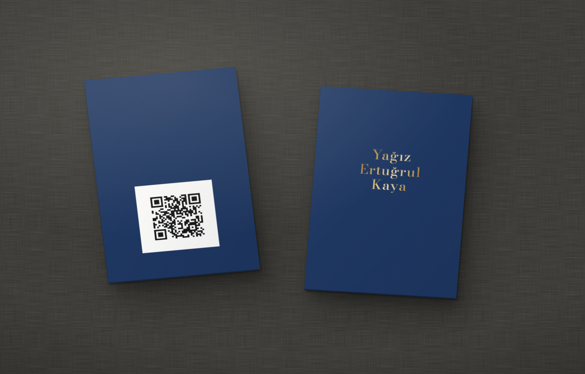

Beynelmilel · Kartvizit · Tur 2

Ön yüzde mürekkepsiz, yalnız ışıkla okunan bir B; altında geniş aralıklı büyük harflerle isim ve italik unvan. Arka yüzde QR ve alan adı. Kart kendini ancak elde, ışığa çevrilince tam olarak gösteriyor.
EB Garamond: isim büyük harf, 8 pt, 0,20 em aralık; unvan italik, 8 pt.
600–700 g %100 pamuklu beyaz kağıt (Crane Lettra Pearl White, Gmund Cotton Max White). B monogramı kör kabartma (çelik/pirinç erkek-dişi kalıp). Metin letterpress tek renk lacivert.
Baskı: A-on.pdf · A-arka.pdf · Kalıp: A-on-kabartma.pdf

İki kağıdın yapıştırıldığı kalın bir duplex kart: kırık beyaz yüz, lacivert yüz, lacivert kenar. Ön yüzde tek bir bronz folyo çizgi ismi unvandan ayırıyor. Kartın bütün parıltısı bu 22 mm'lik çizgide ve arka yüzdeki alan adında.
Cormorant Garamond 500 (isim 15 pt, alan adı 9 pt) + Jost 400 (unvan büyük harf, 0,24 em aralık; iletişim 6,5 pt).
Duplex: 350 g kırık beyaz (Mohawk Superfine Eggshell) + 350 g lacivert (Colorplan Navy), toplam ~700 g. Bronz sıcak folyo: çizgi ve alan adı. QR penceresi opak beyaz serigrafi veya beyaz pigment folyo; QR üstüne dijital/ofset K100. Kenarlar lacivert boyalı.
Baskı: B-on.pdf · B-arka.pdf · Katmanlar: B-on-folyo · B-arka-folyo · B-arka-beyaz · B-arka-murekkep

Ön yüzde yalnız isim, arka yüzde yalnız QR; başka hiçbir öğe yok. İsim üç satır halinde altın oran çizgisine (üstten %38) oturuyor; bronz folyo ile aynı kalıptan kabartma birlikte basılıyor, harfler hem parlıyor hem kabarık duruyor. Arka yüzdeki QR bilerek alt yarıda: kabartmanın arka izi koda düşmüyor.
Bodoni Moda 500, 15 pt, optik boyut 14 (ince çizgiler folyoya dayanıklı).
Lacivert boyalı pamuklu kağıt, 600–700 g (Colorplan Navy duplex veya Gmund Cotton Navy). Ön yüzde bronz sıcak folyo ve tescilli kabartma. Arka yüzde QR paneli opak beyaz, üstüne QR K100.
Baskı: C-on.pdf · C-arka.pdf · Katmanlar: C-on-folyo · C-on-kabartma · C-arka-beyaz · C-arka-murekkep